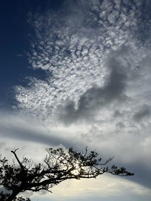
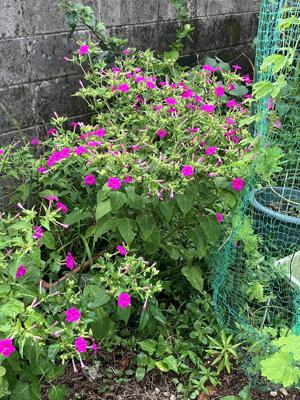

うるがいの話 ある日
最新: 思春期に聞いた曲【うるがいの話 ある日】とは 一日だけのプログです
『うるがいの話』の最新一日だけのプログで、通信料が少なく経済的だ。カニの画像をクリックすると全ての日付が載る『うるがいの話』サイトを表示します
|
|
【うるがいの話】 うるがい(ｳﾙｶﾞｲ urugai)とは、『もずくがに』の名前でとても大きくなります。 |
|---|---|
|
|
【カミマヤーの話】 猫のことを方言でマヤーといいます。カミマヤー（kamimayaa）とは、神の猫のことです。 |
|
【たながぁの音楽】 たながぁ（ﾀﾅｶﾞｰ tanagaa）とは手長えびのことで、何種類かあり大きいのは車 エビぐらいになります。 |

|
【ぶながぁの話】 ぶながぁ(ﾌﾞﾅｶﾞｰ bunagaa)とは、赤い髪の毛、赤い身体、そして身長は１ｍ２０ｃｍ ぐらい、川の蟹を食べているの目撃された。場所は沖縄県国頭郡大宜味村のと ある村僕の隣近所に住んでいる爺さんから、聞いた話です。 |
|
|
【ギーマの話】 ギーマ(giima)とは、山原の里山に咲くスズランに似た、 花を付けます。実は食べられます、 気が付くと口の周りが紫になっています。 |
2024年08月15日 (木）思春期に聞いた曲
15:39

Ａｍａｚｏｎプライムビデオで少し暗い『ＤＯＧＭＡＮ ドッグマン』とい
う映画を見た。映画の中で懐かしいメロディが流れていた、なんという曲だ
ろう？、とネットで調べると『ゴッドファーザー愛のテーマ』とわかる。
１９７２年の映画である、私が中学３年生のとき同級生のトモシゲと名護へ
バスを乗った時、塩屋から一つ上の高校生達が乗り込み、ラジカセでこの曲
が流れていた。なぜか、思春期の私はこの曲は嫌いだった。
オリンピックの閉会式のサイトを何気なくみていたら、『フランクシナトラ
のマイ・ウェイ』の曲が歌われていたとあった。社会人になったころ、上司
と大阪梅田の少し高めのスナックに行くと、カラオケでこの歌を英語で歌う
ビジネスマンがいた。この曲も嫌いだ、よくカラオケで歌われる谷村新司の
昴（すばる）』も嫌いだ（いまも）。
還暦すぎたのせいか、好きではないがユーチューブ動画でも作る。ネットか
ら楽譜データを集め作った。
『ゴッドファーザー愛のテーマ 三線 MuseScore3』３分０１秒
動画演奏１
マイ・ウェイに島太鼓を展開したら、なぜがにぎかな島唄になった。
『フランクシナトラ マイ・ウェイ 三線 島太鼓 MuseScore3』３分０６秒
動画演奏２

裏の畑にふわっと香るオシロイバナの花の匂いを、かいで和む。終戦記念日
だが、進行中の国を考えると・・・・。
１５時３１分 ビットコインの総資産 ￥２４、８５０（↓１、１０２！）